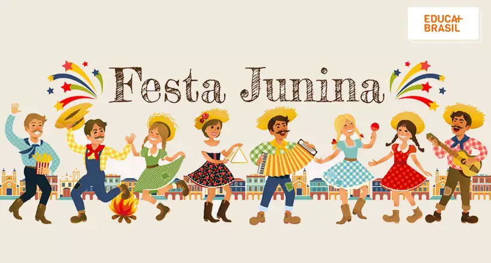
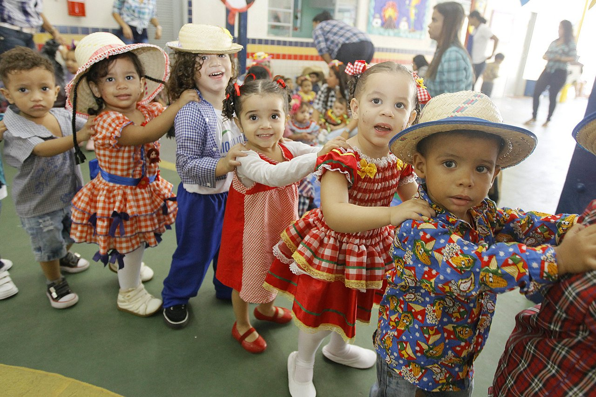

Projeto Escola
Festa Junina

Crianças se Divertindo

Tá na hora de pular fogueira, dançar quadrilha e se deliciar com as comidas típicas de arraiá! Isso aqui tá bom demais, sô! A festa junina é tão boa que até o sanfoneiro fica sorrindo à toa, parecendo um burro quando vê pasto verde! O bom desta festança arretada é que a alegria não tem hora para acabar!
Clique Aqui